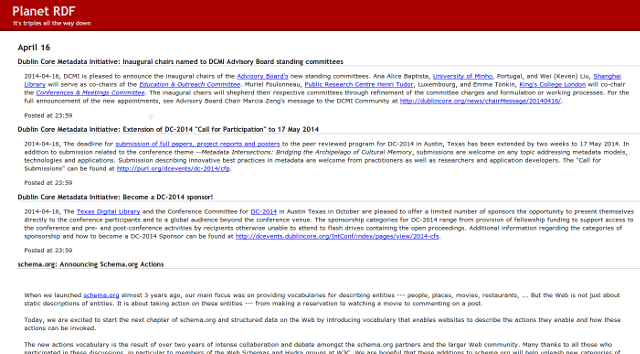

Back to Specification
River of News is a single-pane view of individual entries, ordered by entry date and optionally grouped by (last-updated) feed source.
It is commonly used on online "Planet" aggregation sites, this example taken from Planet RDF.
